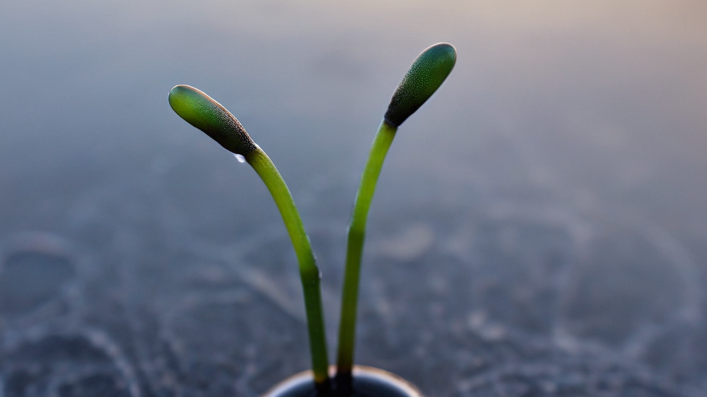

Research area 03 · Computational paleobiology
PaleoSound
Possible sounds of extinct organisms, reconstructed from fossil evidence and the scientific literature. Work in progress.
Everything on this page that is not a citation is an illustration or a model, not measured data. Bubbles, steam, geysers, volcano shape and sound design are artistic choices driven by the audio. Only the facts listed under "Sources" come from the literature.
Setting: Rhynie chert
The Early Devonian Rhynie chert is a silica-rich hot-spring and volcanic deposit. It preserves small plants and arthropods in unusual detail. The illustrations below show a plausible scene for that setting. They are not reconstructions of specific organisms or sites.


Plants and arthropods


Sound
Each scene is driven by a recording. The sound is split into three bands, and each band controls part of the image:
- 20–200 Hz: ground tremor, stem sway, crater glow, ash plume strength.
- 200–1500 Hz: rate of bubble events and foam.
- 1.5–8 kHz: steam density, eruption strength, steam rise speed.
The band mapping is a design choice for visualisation. It is not a claim about how Devonian organisms or environments sounded.
Scene A — hot-spring ambience
Illustrative audio. Source and processing will be described here.
Scene B — geyser
Illustrative audio. Source and processing will be described here.
Sources
Facts used on this page are taken from the following kinds of sources. Full references will be added as they are checked.
| Statement | Status |
|---|---|
| Rhynie chert: Early Devonian, hot-spring and volcanic setting, silica-rich | Literature. Reference to be added. |
| Rhynia / Aglaophyton: leafless, no roots, forking stems, terminal sporangia | Literature. Reference to be added. |
| Aglaophyton height 2.5–5 cm | Teaching material, not a primary source. To be checked. |
| Trigonotarbids and arthropod assemblage | Literature. Reference to be added. |
| Bubbles, steam, geysers, volcano, sound mapping | Illustration or design choice. Not data. |
Status
Placeholder audio and text will be replaced as the work progresses. Nothing on this page has been peer-reviewed.